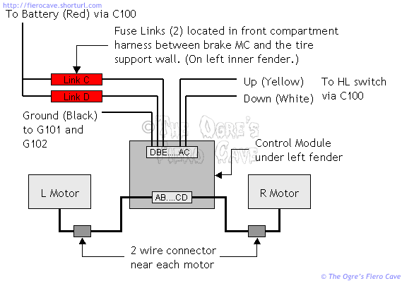

Go Home
Site Map
Go Home
Site Map
Gen 2 HL actuator system
Warning! The headlights and actuator system have power at all times. Power is delivered thru 3 fuse links and one fuse. Never assume the system is dead unless the battery is disconnected! Always unplug the motor before working on the lift assembly!
Note: Module has two methods to shut off the motor... Load "switch" is the normal way it works. If motor had dead gears or bushings then the module has a Timer to kill the motor in 5-6 seconds so a bad motor will not kill your battery.
Overview
(Image source: Rodrv6. Module pictured as installed in 88 Fiero, 87 Fiero is the same.)
The second-generation actuator system is far more reliable than the original system used thru the 1986 model year.
- Motor control is consolidated into a single module hidden under the left fender. (Shown above.)
- The module is current sensing, which eliminates torque switches in the motor.
- Only two wires run to each motor.
- The motors are designed for more strength and easier repairs.
The current sensing ability of the module means the motors will stop immediately if they are overloaded. This protects the entire system from breakage due to jamming or ice. Current sense can shut the motors down far faster than the mechanical system used in first generation motors.
One fuse link is used to supply each motor with power. If one link fries the other motor will still run. (The electronics in the module can take power from both power feeds. Diodes prevent power from flowing into the dead circuit.)
Wiring
Note: There is a Typo in some diagrams, including 88 SM. See here.

The wires to the control side of the module are shown out of order above... It was easier to draw this way. If you go by the photo above, A is the bottom terminal on the left connector.
The grounds are the same ones used for all the lamps in front. There's one on either side of the radiator someplace. Just follow the harness. Power and control lines are routed thru C100, which is the big bulkhead connector near the gas pedal.
The motors connect directly to the module. There are 2 wires for each motor. Left, striped Light Green/Black and Gray/Black. Right, solid color Dark Green and Gray.
The two fuse links for the actuators are normally looped over a plastic ring around the harness conduit. This is done so you can find them if they fail. They will also do less damage to other wiring when they burn. Some people think this is a wiring mistake and shove them into the conduit. (Don't do that! If you did, pull them back out.) The links are located about 4-6 inches before where the harness passes thru the tire support wall. It is pretty unusual for the fuse links to fail.
Trouble Shooting
The second-generation system is extremely reliable but like any aging car system, things do go wrong.
Does the motor run when the HL switch is turned on or off?
If the motor turns but doesn't lift, you likely need Rodney Dickman's repair kit. Order kits for both motors. If one is broken the other likely isn't far behind. This is probably the most common problem with this system. (Another symptom of bad dowels, the light may lift if the hood is open but not when it's shut...)
Motor(s) intermittently won't open and/or close.
Make sure the motor and lift isn't binding. If the motor or lift is binding then the controller will shut off power to protect the motor.
Try manually spinning the motor 1 turn to unload the stop and then cycle the HL switch. (Be careful you don't get pinched!)
You may need to lubricate the motor gears. (Even if you just rebuilt them...)
Check the grounds on the front electrical harness.
1 motor doesn't run at all
Try the above test first.
Unplug the motor. Manually rotate the emergency knob until the light is 1/2 way up or down then apply 12V and ground directly to the connector on the motor. If the motor moves the problem is the module or a fuse link.
Both motors don't run down
Check the taillight fuse and headlight switch. If they look good or you can't tell, apply 12V to the white wire on the HL switch connector. If the motors still won't go down then the white wire is damaged or the module is bad.
Both motors don't run up
If the lamps turn on then the HL switch is ok. The yellow wire may be damaged or the module may be bad.
Notes:
For more Troubleshooting, see here.
If both motors are acting flakey or fail to run, check the ground before replacing the module. Especially when you know both motors are ok. Follow the front wiring harness to find where the ground attaches to the frame. (The module uses the same ground points at the headlights and park/turn lights.) The module may react to a bad ground before you can easily see it as dim headlights, turn signal problems, etc.
Parts and service
WARNING: DO NOT force the lift shaft thru the bearing! Clean off any dirt and file off any mushroom at the end of the shaft. If you force the bearing over the garbage you will damage it and the seal.
If you are careful, you can often open the gear case without damaging the gasket. If one spot sticks, carefully work it with an Exacto knife or razor blade. That will often get it loose with minimal or no damage.
Rodney has kits to replace the dowels that live between the big gear and the shaft. 2 kits, enough to do both motors, and shipping costs around $10. The kits come with instructions that cover reconditioning the entire motor. He also has cover and motor gaskets if you need them.
Lubrication: Grease the gear teeth with "white lithium." Use light oil in the shaft bearings. Don't get sloppy with the oil. You don't want oil getting on the motor brushes! Oil/grease on the brushes will burn and kill the motor. I used Valvoline SynPower synthetic spray oil on the bearings. Don't use WD-40 or Liquid Wrench. "3 in 1" or gun oil should also work.
The "easy" way to access the module is to unfasten the front part of the inner fender where it connects to the fender. The inner fender is flexible enough to bend considerably without damage. 2 screws hold the module in place.
As far as I know, the motors and module can be found in other GM cars like Sunbirds with the little half door and late model Firebird or Trans Am. As expensive as the motors and module are new, it's worth checking the yards. Take the bad one with you for comparison.
The module in the Sunbird is on the left strut tower. I don't know where it is in the others.
The motors may be reversed in some cars. You may want the right motor from another car to replace the left one in Fiero and vise versa.
|
Part |
Number |
Who |
|---|---|---|
|
L Motor |
16507925 |
AC Delco |
|
R Motor |
16507926 |
AC Delco |
|
Motor Controller |
16523917 |
GM |
|
Headlight Switch |
D1527A |
AC Delco |
|
HL Dimmer Switch |
D8041A |
AC Delco |
Most of the above parts are available now discontinued thru any AC Delco dealer.
The motors run from about $100
to over $150 so shop around.
The motors and control module can be obtained now discontinued from GM dealers and
GMPartsDirect. (Use the same numbers above.)
Used Parts
And Pontiac J2000 1986, 88, 89, 90, 91
Dodgerunner and sparx22 says other modules could work if you rewire and add a relay for some modules. May be a option if 16523917 is not avaible.
Dead Fuse(s) or Fried parts in the Module
The Module has two "fuse" on Module's PCB, label F1 and F2, to protect the board.
If you take apart the Module and find one or both are blown then carefully check the motors, wiring to them and front ground wiring or new module can fry fuses or worse too. If you don't find the real problem then the new module can have a very short life.
Fried MOSFET and other parts could be problems in the module and/or the motors or wiring to them.
A "Hard" short, like a body hole cut into a wire shorting out the circuit, can blow a fuse. An intermittent issue or a motor that use more power can be harder to find the problem. Read Electric Motors too because bad power and/or grounds can make the motors to draw more amps.
Can the module be repaired?
Can you fix the Fuse?
IF you find the problem, like a shorted wire to the motor, that causes the fuse to blow then maybe. Problem is GM never published the data needed to fix these. I have no idea what exact wire type used, etc, so don't ask me.
Only Relay is bad?
If the Relay's contacts are worn out or the coil dies then Try this in Forum...
If the Relay is fried then the Module is likely junk.
Other died/fried parts?
Warning: Most people should not fix dead MOSFET. The burnt MOSFET maybe a symptom and not a root cause. Fixing the obvious can bite you and cause more money, much more...
The MOSFET and maybe fuse ("fuse" on Module's PCB, label F1 and F2.) will blow if module can't read motor load. Any component bad or even a solder crack can keep Module from reading motor load. Module then "falls back" on Timer to shut off power to motor. Big problem... The Motor in Stalled condition at end of travel, means motor will spike amps to max circuit allows, 20 amps or more, will fry the MOSFET, maybe the "fuse" and/or relay, and even toast one or both motors.
One repair in the forum and its results.
Another dead unit.
MOSFET #
Gen 2 Motor Conversion
As you've probably heard, you can convert from Gen 1, with its weak motors and relays, to the much tougher Gen 2 system. I don't have all the details on this. If you have problems doing it, post in the forums.
The Ideal way to do this is convert the whole front wiring harness to the 87-88 harnesses but this isn't possible or practical for many people. The supply of good used Fiero harness is rather low but fortunately there are other ways to get the desired result. Just go to your local salvage yards and surf for Sunbird and Trans Am from the late 80's and early 90's. (You're looking for Sunbirds with the little half door.)
David Bartlett of the forums recently did this using the wiring, motors and module from a Sunbird. He indicated everything was pretty much plug and play with one exception. He said you've got to swap the up/down control wires. So White from the Fiero HL switch goes to the Yellow on the Sunbird harness, etc.
To extract the harness from the Sunbird, start at the motors, and follow the wires back to the module. This part will likely go faster if you have some small scissors to cut any tape you run into. Once you get to the module, cut the wires going to the big connector leaving plenty of wire on it.
Read Wire Service for several ideas on waterproof splicing methods. If you stagger the distance of the splices from the module, you should be able to hide them more easily in the OE harness coverings. The Module can be mounted anywhere the wiring will reach.
While pulling the complete motor wiring from the Sunbird or whatever is more time consuming, you will get a cleaner installation when everything goes into the Fiero. The Michigan method likely works but requires more wire splices. My feeling is that you will always be better off avoiding as many splices as possible.
Yes, it is possible to do this with no splices at all but that is beyond many people. If you really want to do that, I think you can get the crimp tool and terminals thru Pep Boys and other places that carry MotorMite. I recommend you solder the terminals as well because it's hard to get them right with a hand crimper. You don't want them pulling apart.
Cliff Notes for upgrade with all front harness.
Dodgerunner archive doing upgrade with Firebird motors and controller.
Would Ogre do this conversion?
Absolutely! There is no way in hell I'd spend the money to fix the old motors. If it was just a relay, maybe but anything else isn't worth the trouble unless you are showing in a strict factory class. Anyone with bad Gen 1 motors is much better off converting to Gen 2.